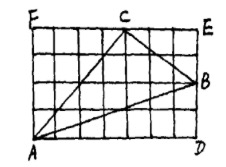

Pick 定理: 顶点在格点上的简单多边形面积公式为
$$ S=i+\frac{j}{2}-1 $$
其中 $i$ 表示多边形内部的点数，$j$ 表示多边形边界上的点数，$S$ 表示多边形的面积。下面给出清晰明了的证明方法。
与坐标轴平行的矩形（长方形）
不妨设矩形边长为 $a,b$。因此面积 $S = ab$。内部格点个数 $i=(a-1)(b-1)$。边界格点个数为 $j=2(a+b)$，因此显然结论成立。
直角边与坐标轴平行的直角三角形
不妨设直角三角形的直角边分别为 $a,b$，面积 $S=\frac{ab}{2}$。将其补成一个矩形，则两个直角三角形全等，设公共边的格点个数为 $e$,内部格点数 $ i=\frac{(a-1)(b-1)-(e-2)}$, 边界总格点数为 $j =e+a-1+b-1$,因此
$$ i+ \frac{j}{2} - 1 = (a-1)(b-1)/2 - (e-2) + \frac{e+a-1+b-1}{2} -1 = \frac{ab}{2}$$
一个简单多边形拆除两个简单多边形
若这两个简单多边形公共边上有 $c$ 个顶点,分别满足 Pick 定理。
设 $P$ 的面积为 $P_i + \frac{P_j}{2} - 1$
设 $T$ 的面积为 $T_i + \frac{T_j}{2} - 1$
则 $PT$ 的面积为:
$$ (T_i+P_i+c-2) + \frac{P_j-c+bp-c+2}{2} - 1$$
也满足 Pick 定理。
类似地，若 $P,PT$ 满足 Pick 定理，$T$ 也满足。
三角形
对于一般三角形ABC，我们可以将其补在一个与坐标轴平行的矩阵(边长设为 $a,b$)中（如下图）

根据上面的结论，容易知道对于一般三角形，结论也成立。
简单多边形
需要说明的简单多边形是指，平面上边不相交的多边形。由于每个 $n$ 边形，都可以拆成一个 $n-1$ 边形和一个三角形，因此易用数学归纳法证明结论对简单多边形成立。
传说中这个定理和有关Farey序列。